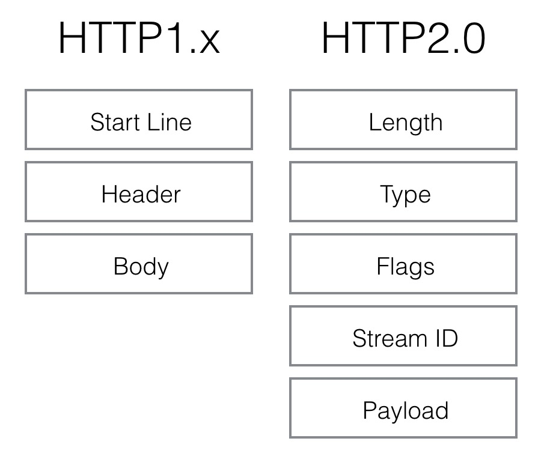
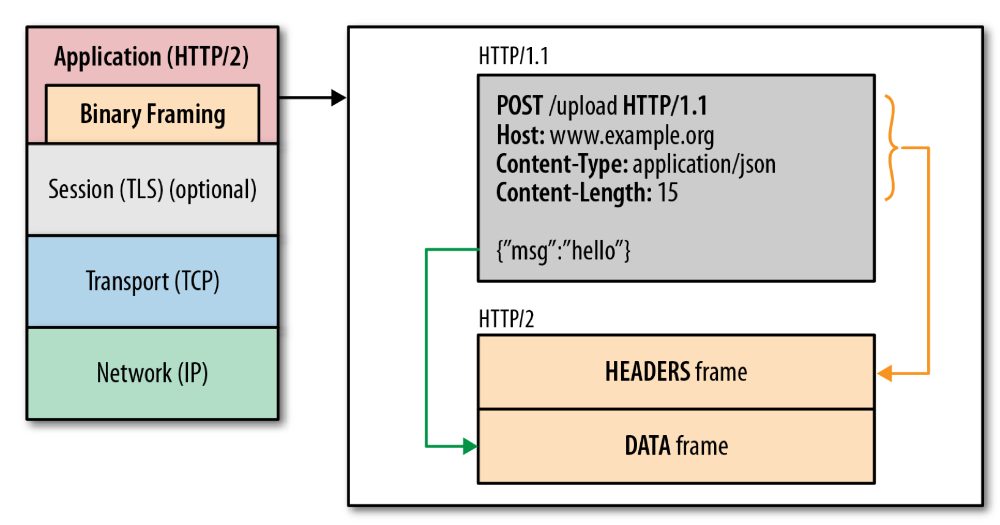

HTTP2.0 协议机制针对之前的http1.x时代，做出了很大的改善，进行了性能，流量的优化处理，下面的一篇文章，很值得我们去学习，参考：
http2.0那些事
下面是我在学习HTTP这块时的一些积累终结：
网络基础
1,代理(Proxy):就是我们常说的想连接到Google等国外网站时，就需要通过代理来进行连接，其是一个中间程序，可以将我们请求的头信息进行修改再发送到远端，在jdk中通常进行下面的设置来为HTTP设置代理：
2,网关(Gateway):一个网络连接到另一个网络的关口，类似于我们从一个房间通过一个门到另一个房间，通常我们企业内部的网络连接到外网都是需要通过一层网关来进行配置的，这样我们可以进行流量监控，异常拦截等操作，
网关与路由器的区别？
网关：一个大概念，不具体特指一类产品，只要连接两个不同的网络的设备都可以叫网关，如信令网关，媒体网关等
路由器：一般特指能够实现路由寻找和转发的特定类产品，路由器很显然能够实现网关的功能，主要实用与IP网络世界里，
（扩展，一般我们家用的路由器，实际上是一个带有三层转发功能的交换机，主要实现的是DHCP，PPPOE这类的功能，和企业级别的路由器是有区别的）
3,隧道(tunnel):计算机网络使用tunnel协议，当一个网络协议（传输协议）封装不同的有效载荷协议。通过使用tunnel1（例如）进行了一个不兼容的交付网络的有效载荷，或通过一个不受信任的网络提供一个安全的路径. 这种协议可以用在HTTP，socket等，
HttpTunnel，也叫Http隧道，Http穿梭），它用HTTP协议在要通信的Client和Server建立起一条”Tunnel”，然后Client和Server之间的通信，都是在这条Tunnel的基础之上。
HttpTunnel通常被用在受限的网络环境中，比如在NAT环境中的Client，受防火墙限制的环境中的Client等，在这样的环境中，Client不能直接连接到公网(WAN)的Server，这时候就可以通过HttpTunnel技术，来解决上述问题，如我们现在的VPN技术，就是这种机制
HTTP协议
HTTP:超文本传送协议(Hypertext Transfer Protocol )，是Web联网的基础，也是手机联网常用的协议之一，HTTP协议是建立在TCP协议之上的一种应用。
HTTP1连接最显著的特点是客户端发送的每次请求都需要服务器回送响应，在请求结束后，会主动释放连接。从建立连接到关闭连接的过程称为“一次连接”，
http问题与解决方案
1，请求数据是基于文本格式的，不支持头部压缩，数据冗余浪费，不适合宽度低的环境
2，head of line blocking：连接必须有序等待的发送出去，下一个请求必须等待上一个请求的返回后才能再去请求，这就带来的问题就是，现在的一个页面中有很多的img,css,js需要去加载，如果前面一个请求是不健康的，那么就严重阻塞住了页面的加载，很不能充分利用宽度，
3，底层socket连接复发复用：这个是因为对于HTTP请求，一次请求，到响应回来就算结束了，那么这个socket也就需要断开了，如果一个网页多次请求，就导致底层的socket频繁被创建，释放，降低加载速度，也带来性能上的损耗。
4，而针对Http连接无法重用问题，导致一些特定场景业务无法进行，对此一些相关的解决方案有：
- 基于TCP的长连接机制
- http long-looping(http长轮询机制，目前web im是这种机制，靠http的超时机制)，http请求后，服务器并不会马上返回业务数据，而是等待有新的业务数据产生的时候再返回。所以连接会一直被保持，一旦结束马上又会发起一个新的polling请求，如此反复，所以一直会有一个连接被保持，这样服务器有新的内容产生的时候，并不需要等待客户端建立一个新的连接
- http streaming
- web socket机制
- http keep-alive机制：我们在请求头配置 connection:keep-alive 这样当服务器收到附带有Connection:Keep-Alive的请求时，它也会在响应头中添加一个同样的字段来使用Keep-Alive。这样一来，客户端和服务器之间的HTTP连接就会被保持，不会断开（超过Keep-Alive规定的时间，意外断电等情况除外），这样后续相同的请求就可以使用同一链接了，
5，针对请求阻塞问题，一些解决方案有：
- Pipelining技术：将同一Host的多个HTTP请求整批提交的技术，而在传送过程中不需先等待服务端的回应。不同浏览器的并发数是不同的，而为了尽可能利用这个机制，我们需要将请求的主机名进行扩大化，这样可以并发进行请求了
HTTP协议弊端其他技巧
1）图片合并和文件合并，保证一次请求，避免多次小文件的请求方式
2）域名分片，因为对于host1.cyg.com和host2.cyg.com这两个域名，对于协议来说是算作两个独立的域名来请求的，所以其可构建的连接也就扩大的两倍，利用这个特性就可以扩大整个访问的性能，
协议升级的SPDY与HTTP2.0
1，spdy协议是位于http层之下，ssl + tcp层之上的，这样可以对之前的http1时代进行很好的兼容，其主要功能有
- 基础功能
- 多路复用：多个请求共享一个TCP的连接 （可能带来并发阻塞问题，）
- 请求优先级：这个是解决请求包阻塞问题，为每个请求配置上优先级，这样重要的请求就会优先得到响应
- head进行压缩控制：之前http1的协议中header很多是重复的，需要压缩，来应对弱网环境下的处理，
- 高级功能
- server推送：可以实现服务器主动对客户端进行消息推送功能
- server hint：
具体的知识介绍，参考(http://mrpeak.cn/blog/http2/)
我们来分析下，okhttp是如何在代码层级上对http2.0技术的支撑的，
2，HTTP2.0技术介绍
1）数据格式改动，将文本格式修改成二进制的格式，


2) 多路复用，stream_id，来配置请求是否能共享连接通道，同时也为request设置优先级和依赖，解决请求阻塞问题
3) header 压缩